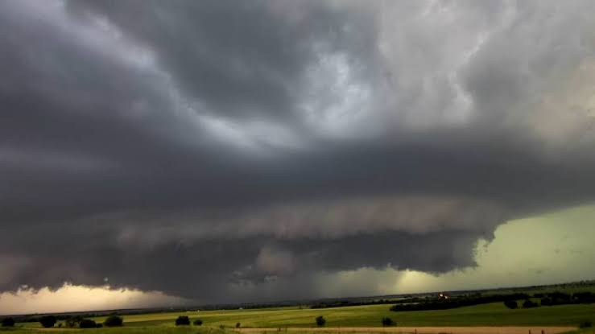

UN issues strong warning about the 2026–27 El Niño
2026, September 3
Worldwide
The UN is issuing an unusually strong warning about the 2026–27 El Niño, saying it could become an exceptionally powerful event and significantly increase the risk of extreme weather worldwide.🌊 What is happening?
The World Meteorological Organization (WMO) says El Niño is already firmly established and strengthening. It expects the event to become “very strong” toward the end of 2026 and persist into at least February 2027. The WMO puts the probability of it continuing through February at close to 100%—an unusually confident forecast.
The warming in the tropical Pacific is extraordinary:
Niño 3.4 sea-surface temperatures reached about 2°C above average in July.
Weekly measurements subsequently reached 2.2–2.6°C above average.
Subsurface waters in parts of the Pacific were more than 8°C above normal.
The event is expected to peak around October–December 2026.
UN Secretary-General António Guterres described it bluntly:
“El Niño is being supersized before our eyes.”
He warned that the combination of this natural phenomenon with an already warming planet is pushing the world into a “danger zone of extreme weather.”
🌡️ Why is this one particularly worrying?
El Niño itself is not caused by climate change. It is a natural Pacific Ocean–atmosphere cycle that normally occurs every 2–7 years.
But today's atmosphere and oceans are already considerably warmer because of greenhouse-gas emissions. Consequently, a powerful El Niño is effectively being added on top of an already warmer baseline.
That can produce:
🔥 Extreme heat
El Niño normally raises global average temperatures because heat stored in the Pacific is transferred into the atmosphere. The effect can persist after the El Niño peak. Scientists therefore expect 2027 could be exceptionally hot and potentially the hottest year on record.
🌧️ Flooding
Changes in atmospheric circulation can bring unusually heavy rainfall to some regions, increasing the risk of flooding.
🏜️ Drought
Other regions experience suppressed rainfall, worsening water shortages, agricultural losses and wildfire conditions.
🌾 Food insecurity
Agriculture is particularly vulnerable because the same event can produce drought in one major food-producing region and excessive rain in another.
🌪️ Storm changes
El Niño shifts global jet streams and atmospheric circulation, changing where storms develop and travel.
🚨 The really important point
This isn't simply another El Niño forecast.
The WMO says this is the first time one of its El Niño/La Niña updates has been this unequivocal, reflecting unusually strong agreement among its forecasting centres. WMO Secretary-General Celeste Saulo said the event could deliver a “massive blow” to communities and economies and called for exceptional preparation.
And there is a potentially important climate sequence here:
Very strong El Niño → huge release of ocean heat → exceptionally warm global temperatures → 2026/27 potentially setting new temperature records.
The UN's concern is therefore not that El Niño will cause climate change, but that it could temporarily turbocharge the effects of an already warming climate.